Memória da marca
Perfumes Paris Elysées que saíram de linha
Desde 2000 no Brasil, a Paris Elysées não parou de evoluir: lança perfumes novos, vê alguns virarem clássicos por mais de 20 anos e outros conquistarem o público em poucos meses. E alguns, mesmo com fãs fiéis, acabam saindo de linha. Aqui está a lista dos 87 perfumes que já fizeram parte da história da marca.
Os que ficaram
O Vodka Diamond, nascido no fim dos anos 1990, continua no catálogo há mais de 20 anos. Ao lado dele vieram novos sucessos, como Billion Casino Royal, Night Caviar, Vodka Wild e Bloody Mary. Para dar lugar às novidades, outros perfumes deixaram de ser fabricados.
O Dollar e a herança Billion
O Dollar, lançado em 1991, foi o primeiro grande sucesso internacional da Paris Elysées. Ele saiu de linha, mas a ideia continua na família Billion, que hoje vai do Billion Casino Royal ao Billion Dollar Elixir. A textura inspirada na nota de 100 dólares, criada para a caixa do Dollar, está em todas as caixas Billion.
Alguns frascos que marcaram época
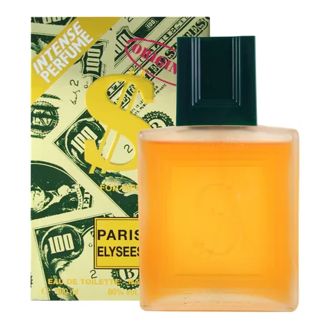
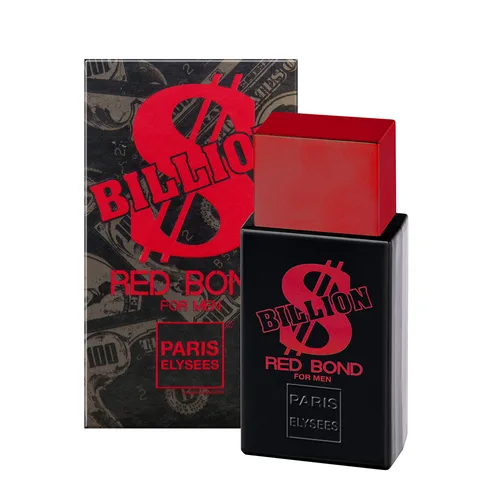
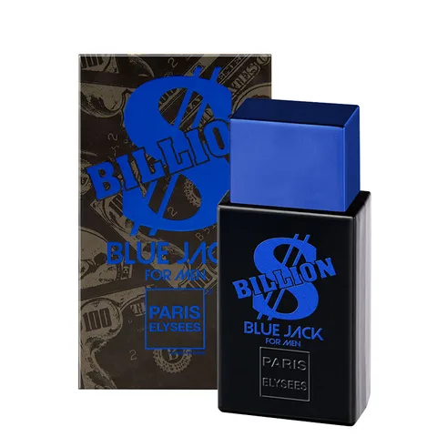
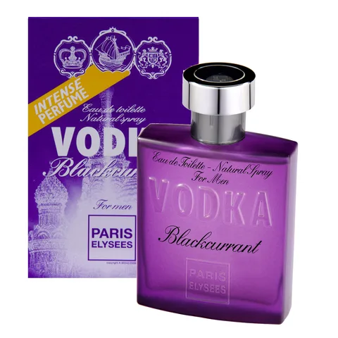
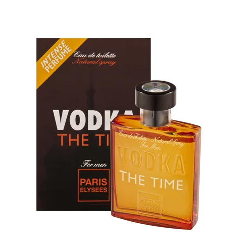
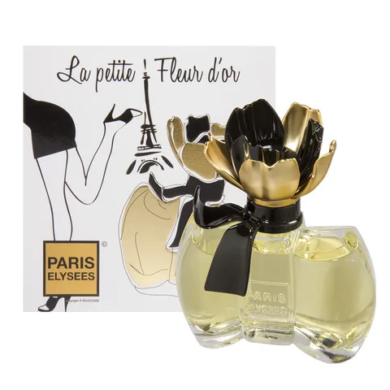
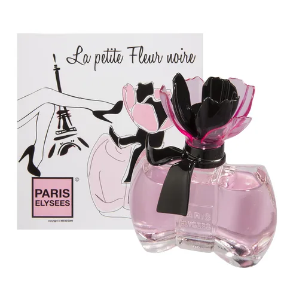
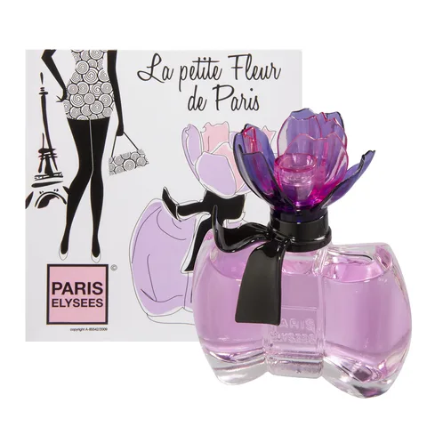
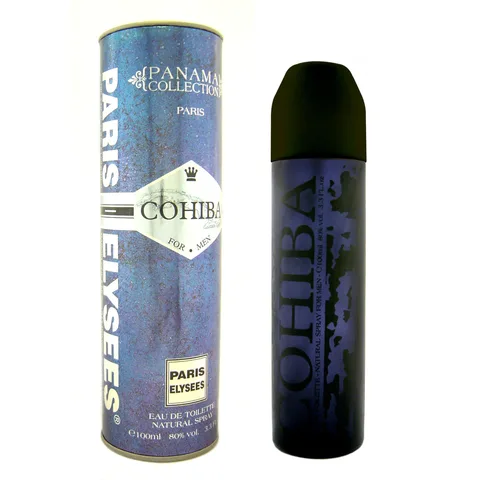
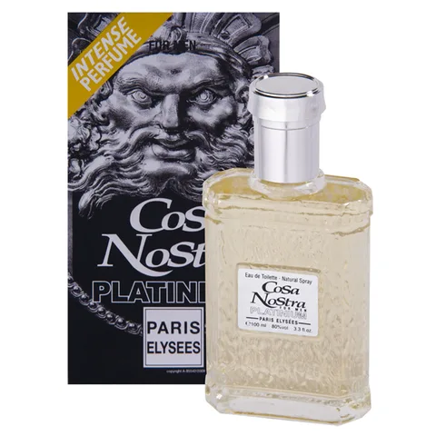
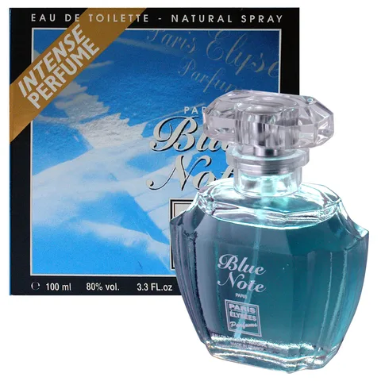
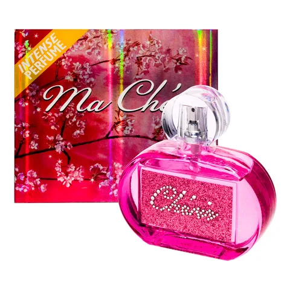
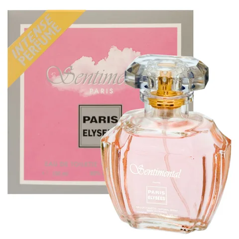
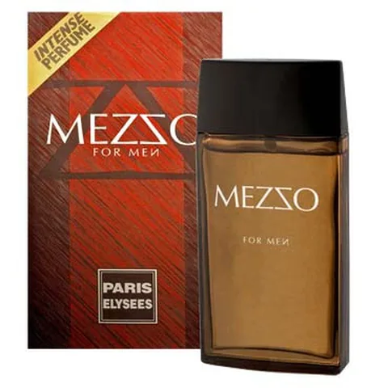
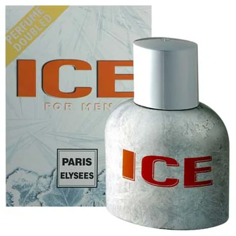
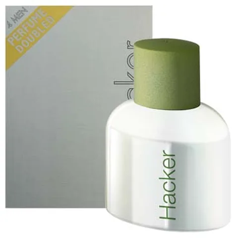
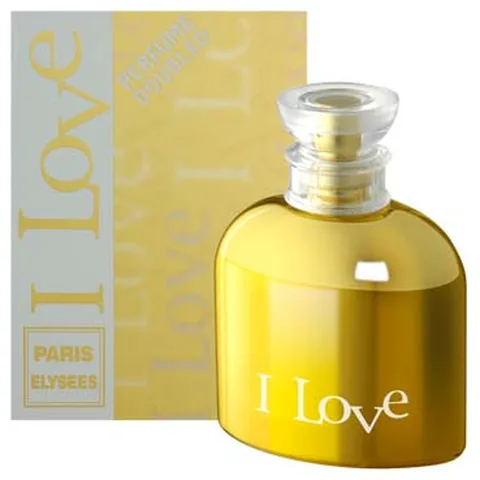
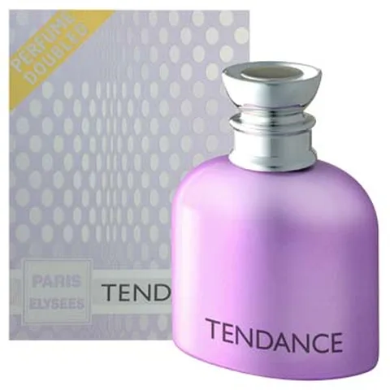
Campanhas que fizeram história
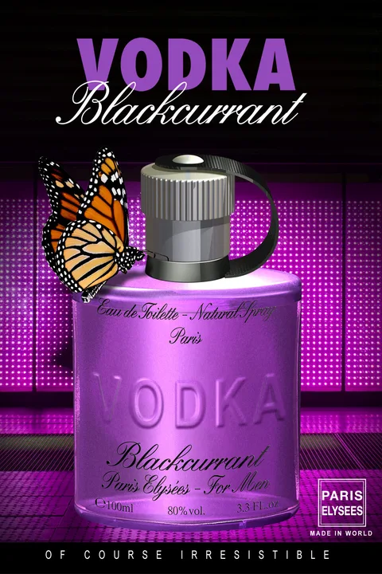
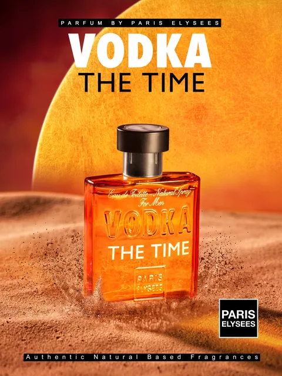
Billion Collection
- Billion $ Blue Jack
- Billion $ Green Bond
- Billion $ Red Bond
- Dollar
- Dollar Premium
Caviar Collection
- Blue Caviar
- Grey Caviar
- Pure Caviar
Vodka Collection
- Vodka Blackcurrant
- Vodka Pink
- Vodka The Time
La Petite Fleur
- La Petite Fleur d'Or
- La Petite Fleur de Paris
- La Petite Fleur de Provence
- La Petite Fleur Noire
Linha Romantic
- Romantic Love
- Romantic Princess
Linha Strass
- Arum Luxur
- Extasia
- Lass
- Ma Chérie
- Rouge Amour
- Strass
- Success Love
- Unik
- Yes
Linha Cigares
- Cohiba
- Montecristo
- Partagas
- Punch
Le Parfum de l'Homme
- Le Parfum de l'Homme Don Juan
- Le Parfum de l'Homme Elegant
- Le Parfum de l'Homme Galant
- Le Parfum de l'Homme Mystérieux
Outros perfumes
- Adagio
- Allium
- Aloha
- ASAP
- Aventure
- Black Purple
- Blue Lazer
- Blue Note
- Clethra
- Cosa Nostra Platinium
- Destinée
- Diabolique
- Distinction
- Dom Juan
- Ether
- Expression
- Florentina
- Grand Amour
- Hacker
- Handsome Blue
- I Go Deep Night
- I Go for Men
- I Go Women
- I Love
- Ice
- Identity
- Ispahan
- Je Vous Aime
- Joli Coeur
- King
- Klass
- Man is Man
- Mezzo
- Moon Light
- Night Life
- Noces d'Été
- Nuit Bleue
- Nuits Mauves
- Omyn
- One More Night
- Opinion
- Ovation
- Pepper
- Sentimental
- Shaft
- Silver Eyes
- Smoking
- Spell
- Sporting Man
- Swanee
- Tendance
- Valéry Milano
- Wild Freedom
Sente falta de algum?
Procurando algo parecido com um perfume antigo? Veja a história da marca, explore as linhas atuais ou faça o quiz. Antes de comprar um frasco antigo, veja como reconhecer um perfume original. Para pedir a volta de um perfume, escreva para sac@parfum.com.br.
Perguntas frequentes
Por que um perfume sai de linha?
O catálogo da Paris Elysées evolui com o gosto do público: a marca lança novidades todos os anos e, para abrir espaço, alguns perfumes deixam de ser fabricados. Todos tiveram seus fãs; sair de linha não quer dizer que o perfume era ruim.
Ainda é possível encontrar um perfume que saiu de linha?
Às vezes aparecem frascos antigos à venda em sites e marketplaces. São estoques remanescentes: confira a procedência, o estado da embalagem e o lote, e veja como reconhecer um perfume original antes de comprar.
Um perfume descontinuado pode voltar?
Não há previsão de relançamento para os perfumes desta lista. Se você sente falta de algum, escreva para o atendimento oficial: a marca acompanha os pedidos dos clientes.
Qual perfume atual escolher no lugar do meu favorito antigo?
Comece pela linha atual do seu antigo favorito (Billion, Caviar, Vodka, La Petite Fleur) ou use o quiz do guia para encontrar o perfume pelo seu gosto.
Lista informada pela Paris Elysées. Atualizado em 13 de novembro de 2026.